Jul 6, 2011 · 1 minute read · Comments
Games development

Era algo que llevaba queriendo implementar en Sion Tower y finalmente he visto la oportunidad. Sion Tower estará disponible en varios idiomas gracias a la biblioteca libre de internacionalización gettext. Por el momento os puedo confirmar tres idiomas: español, inglés y francés. Sigue leyendo para conocer los detalles.
GNU gettext es prácticamente un estándar en la internacionalización de software. Hasta el momento lo había utilizado en gLapse pero estoy encantado con el sistema. Soy consciente de que Sion Tower es el ejemplo final de IberOgre y no pretendo llegar a demasiado público. No obstante, uno de los objetivos de la wiki es fomentar buenas prácticas de desarrollo y este puede ser un gran ejemplo.
Internacionalizar un proyecto abre las puertas a que nuevos colaboradores se interesen y aporten traducciones. La experiencia con gLapse no podría haber sido mejor, no tardé en recibir traducciones al francés, japonés y alemán. Si quieres aprender, te recomiendo un pequeño, directo y claro manual que confeccionó mi compañero José Tomás Tocino.
Pronto escribiré sobre los problemas a la hora de internacionalizar un juego que utilice MyGUI como biblioteca para la interfaz. He desarrollado un pequeño script que puede facilitarle las cosas a personas en mi misma situación.
Jul 5, 2011 · 0 minute read · Comments
Projects
Jul 5, 2011 · 1 minute read · Comments
Projects

I’ve been really busy with the development of Sion Tower but it’s also been possible to spend some time working in gLapse. After introducing new stuff and fixing broken pieces, I"m proud to announce the third release of the GNU/Linux time lapse tool: gLapse v0.3! Continue reading to find about its new features and to get download links.
Changelog
- Improves video quality but the slider to configure it had to be deleted.
- French translation thanks to my little sister.
- Japanese translation thanks to @jjbernalr.
- Updates other translations.
- Bugfixes (see SVN log for more details).
Download
Hope you like it! Feedback, bugs reports and feature request are hugely welcome at the issues section.
Jul 3, 2011 · 5 minute read · Comments
Games development
Me gustaría pedir disculpas por el descenso en el ritmo de publicación, el motivo es muy sencillo: estoy trabajando de forma intensa en la interfaz de Sion Tower. Para el menú principal he creado un escenario montañoso con los enemigos aproximándose a la Torre Sagrada en medio de una intensa lluvia. Modelar las montañas con Blender es terriblemente sencillo una vez se conoce la técnica apropiada y aquí vamos a comentarla en detalle.
Creación de la malla
Lo primero que debes hacer es abrir Blender y eliminar el cubo por defecto. Utilizaremos una rejilla o malla de vértices para modelar el terreno. El proceso es simple, habrá que modificar la posición Z (vertical) de varios vértices para crear elevaciones. Finalmente, utilizaremos suavizado para evitar los bordes abruptos.
Para añadir la rejilla seleccionamos Add → Mesh → Grid e indicamos el número de vértices. A mayor resolución más calidad pero el coste computacional en Blender y en un videojuego crecerá de forma cuadrática. En Sion Tower me ha bastado con 50×50, el suavizado final se encargará de mejorar el resultado. Después, en modo edición, debes escalar la rejilla hasta que se ajuste a la escala de tu juego o entorno.
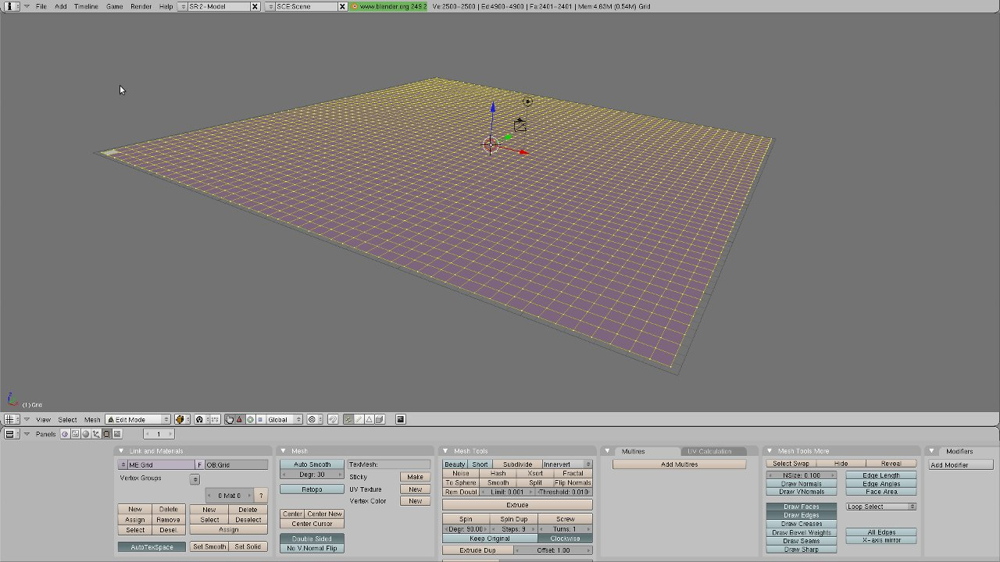
Modelado de las montañas
La clave está en utilizar el modo de edición proporcional que activamos pulsando la tecla O. Veremos que el modo también puede activarse en la barra de herramientas Proportional – On. Este modo hará que, al modificar un vértice, los vecinos dentro de un radio de acción también se vean ligeramente afectados. Justo al lado establecemos el Falloff a Smooth Falloff. Para activar el suavizado, seleccionamos todos los vértices con A y pulsamos en Set Smooth.
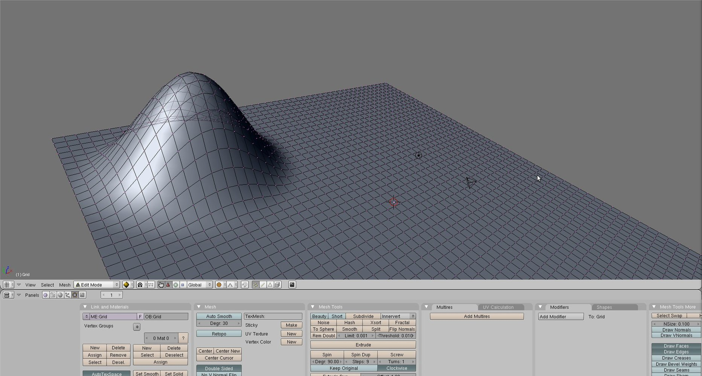
El proceso a seguir para crear o modificar elevaciones es:
- Seleccionar un vértice con el botón derecho y ajustar el radio de acción con la rueda del ratón a nuestro gusto.
- Desplazar el vértice pulsando la tecla G, es importante restringirlo al eje vertical con la tecla Z, de lo contrario se producen efectos extraños.
- Repetir el proceso con vértices y radios de acción diferentes hasta conseguir el resultado deseado.
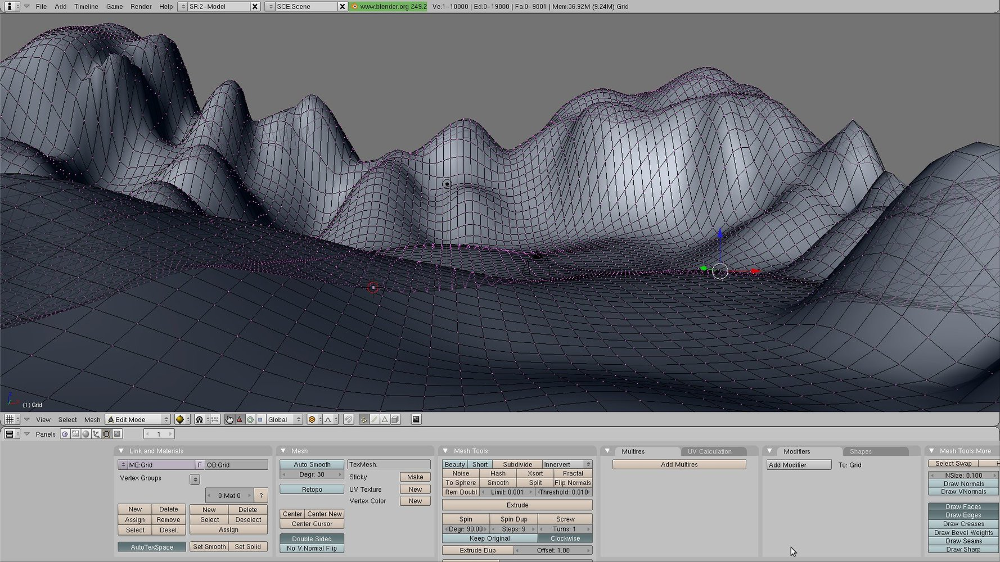
Recuerda que las montañas son estructuras naturales y que, por tanto, muestran multitud de irregularidades. En la asimetría y lo brusco está el secreto.
Texturizar el terreno
Continuamos la creación del terreno añadiendo una textura:
- Seleccionamos el terreno, acudimos al panel de materiales (F5) y añadimos un material nuevo.
- Las montañas no tienen un aspecto de material plástico, por lo que establecemos su color especular a .
- Nos dirigimos al panel de texturas (F6) y añadimos una nueva textura de tipo imagen con césped.
- Cargamos la textura de fichero y establecemos las propiedades XRepeat e YRepeat que, como sus propios nombres indican, hacen repetir la textura.
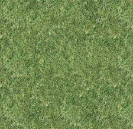
Si pulsas F12 verás el renderizado de tus montañas y no tardarás de percatarte de dos problemas: la iluminación y… ¡parecen las montañas de los hobbits estando verdes! En primer lugar, deberás jugar con las fuentes de luz. Ahora nos centraremos en mezclar varias texturas.
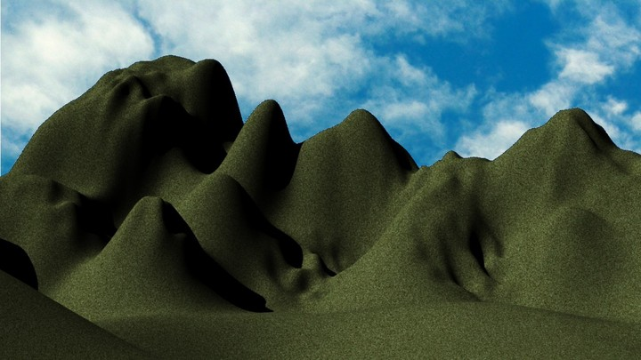
Texturas stencil
Un terreno de corte más realista tiene varias texturas: hierba, tierra, rocas o incluso nieve. Las transiciones entre las mismas deben ser suaves y su situación debe ser lógica: la hierba abunda en los valles mientras la roca en los picos montañosos. En esta sección aprenderemos a aplicar varias texturas a nuestro terreno mezclándolas entre sí de manera apropiada.
Imaginad que tendremos una pila de capas con varias texturas ordenadas: hierba, roca y nieve. En medio colocaremos dos texturas en escala de grises llamadas stencil que indicarán al sistema de renderizado cómo han de mezclarse las capas entre sí. Un color negro indica que sólo ha de visualizarse la capa superior, blanco significa que sólo se vera la capa inferior. Lo interesante es que un valor intermedio o gris significará que las capas se mezclarán siguiendo la ponderación del color.
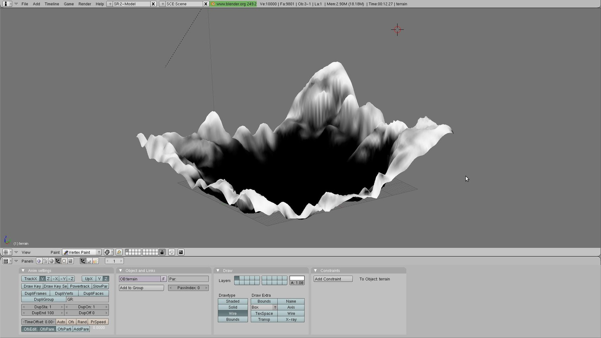
Seguimos el siguiente proceso:
- Cambiamos del modo edición al Vertex Paint.
- Seleccionamos el panel de edición (F9) y veremos una paleta de colores. Elegimos el color negro y pulsamos sobre set VertCol y la malla quedará completamente negra (se visualizaría la capa inferior).
- Elegimos el color blanco y configuramos tanto la opacidad como el tamaño.
- Comenzamos a pintar el terreno: los picos deberían ser completamente blancos (roca), las lomas de un tono intermedio y los valles prácticamente negros (hierba).
- Cuando estemos satisfechos seleccionaremos la vista Top y el modo de proyección ortográfico. Hemos de hacer una captura de pantalla y aislar la el resultado con cualquier software de edición de imágenes como Gimp.
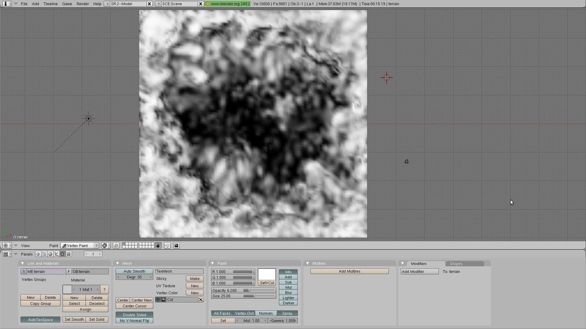
- Volvemos al modo edición y creamos una nueva textura debajo de la hierba de tipo imagen cargando la textura stencil hierba-roca. Esta textura no debe repetirse.
- En el panel Map To deseleccionamos Col y activamos Stencil y No RGB.
- Creamos una nueva textura para la roca, cargamos la imagen y aplicamos repetición.
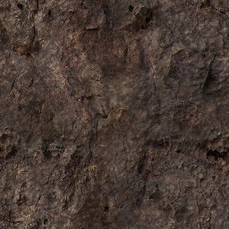
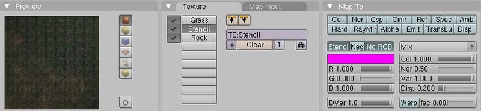
Si renderizas con F12 verás un resultado mucho más satisfactorio.
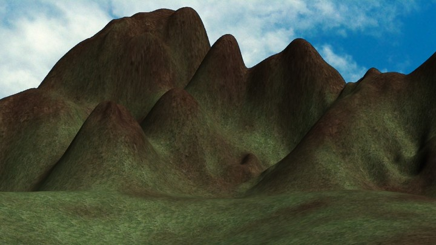
Resultado final
Si repites el proceso stencil para añadir una nueva capa con nieve el resultado tendrá mucha más calidad:
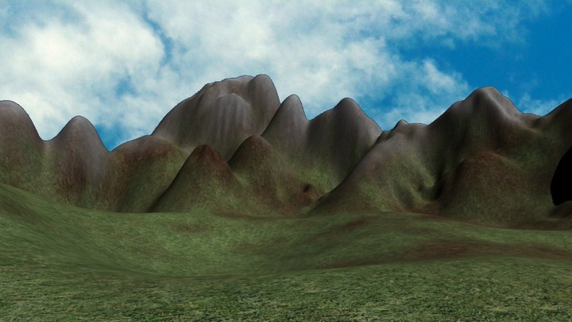
La escena final para el menú principal de Sion Tower ha quedado de la siguiente manera:

Nota importante: A la hora de exportar a Ogre el modelo con las texturas stencil he tenido muchos problemas. Al final la solución ha pasado por mezclar yo mismo las capas stencil con las de texturas utilizando Gimp y aplicarlas a la maya utilizando mapeado UV.
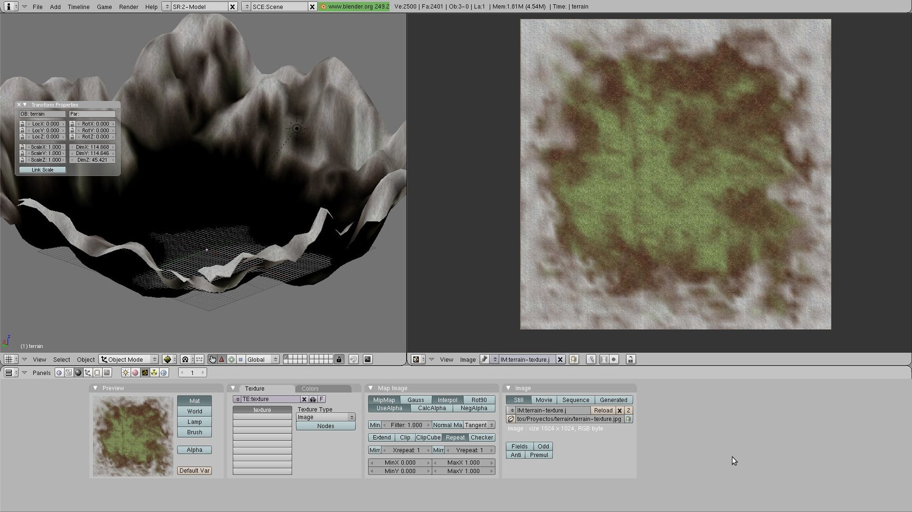
Referencias
Para realizar el proceso y redactar el artículo he seguido estos dos estupendos tutoriales con varios añadidos personales:
Jun 22, 2011 · 4 minute read · Comments
Games development

Las últimas semanas he estado trabajando en la IA de Sion Tower y por el momento el resultado es satisfactorio. Antes utilizaba el algoritmo A para la búsqueda de caminos de los enemigos, pero me di cuenta de que el rendimiento podía ser mucho mejor si precomputaba las búsquedas con una alternativa como Floyd. En este artículo hablo de las dos aproximaciones y comparo los resultados obtenidos.
Aclaración: en el texto no voy a entrar en detalles sobre los algoritmos A* ni Floyd. Si no los conoces deberías consultar los sendos artículos de Wikipedia o tu libro de algoritmia preferido.
Aproximación 1: algoritmo A*
Como ya he dicho alguna vez, utilizo una malla de navegación diseñada con Blender para definir el área transitable por los enemigos. Cada vez que algún monstruo desea saber el camino hacia el personaje se realizaban los siguientes pasos:
- Ejecutar A* desde la celda del enemigo hasta la del personaje.
- Recuperar camino devuelto por A*.
- Simplificar el camino eliminando celdas intermedias para evitar zig-zag.
- Suavizado del camino mediante spline cúbico.
Los pasos 1 y 3 resultaban especialmente costosos en términos de tiempo mientras que los pasos 2 y 4 eran muy rápidos. Traté de minimizar la necesidad de recalcular rutas hacia el protagonista pero cuando el jugador se desplaza demasiado, resulta inevitable.
Aproximación 2: algoritmo de Floyd
Al ejecutar A* cada vez que un enemigo deseaba rehacer su ruta estábamos incurriendo en muchos cálculos redundantes. **¿Por qué no precomputar los caminos mínimos?** Eso es precisamente lo que hace el algoritmo de Floyd, calcula los costes y el camino para viajar entre todos los pares de nodos x e y de un grafo. El resultado lo almacena en una matriz de costes mínimos (que no nos interesa) y otra de caminos (con la que nos quedaremos).
Al tener una matriz con los caminos ya calculados, recuperar una ruta es mucho más eficiente en tiempo. Incluso podemos eliminar la simplificación de caminos en cada consulta si también precalculamos todas las simplificaciones posibles. No obstante, se requieren una serie de pasos iniciales:
- Construcción de la matriz de costes iniciales a partir de la malla.
- Ejecución del algoritmo de Floyd.
- Simplificar todos los caminos actualizando la matriz de caminos mínimos.
Cuando un enemigo quiera conocer una ruta, simplemente realizamos los siguientes pasos cuyo tiempo es mínimo:
- Recuperar el camino.
- Suavizar el camino mediante un spline cúbico.
Comparativa: A* vs Floyd
Todas las mediciones de tiempo que se muestran a continuación se han realizado sobre el mismo equipo, bajo la misma carga de trabajo y con la misma malla de navegación de 113 celdas.
Coste inicial: Utilizar Floyd conlleva una serie de cálculos iniciales que A* no son necesarios. No obstante, podemos ver que son bastante reducidos ya que suponen 2.18ms una sola vez al cargar cada nivel.
Consumo de memoria: podría preocuparnos el coste de almacenar la matriz de caminos mínimos. Para 113 celdas tenemos una matriz de 113 * 113 = 12769 enteros para indexar las celdas que componen los caminos. Esto equivale a 50KB, una cantidad reducida comparada con el tamaño de un modelo 3D animado. Es cierto que la aproximación de Floyd no es tan escalable como A* por el coste en memoria. Mi escenario de 113 celdas es pequeño, si aumentamos a 1000 celdas, la matriz ocuparía 4MB. Es O(n2) con respecto al número de celdas.
Tiempo para construir un camino: aquí es donde Floyd le saca una gran ventaja a A*. Recuperar un camino utilizando A* requiere en término medio 0.5ms mientras que utilizando Floyd necesitamos 0.02ms. La diferencia es muy significativa. Imaginad que tenemos 5 enemigos en pantalla que piden un camino en el mismo frame. Con A* el coste ascendería a 5 * 0.5ms = 2.5ms mientras que con Floyd invertimos 5 * 0.02ms = 0.1ms. En un juego mono-hilo que va a 60 FPS sólo disponemos de 16.6ms para realizar todos los cálculos (IA, colisiones, renderizado).
¡2.4 ms de diferencia por frame es una excelente optimización!
Conclusión express
Precomputar caminos es mucho menos escalable que hacer los cálculos de forma dinámica pero la mejora de rendimiento es enorme. A pesar de ello, para escenarios grandes puede hacerse una búsqueda de caminos jerárquica (un tema un poco más complejo). Hay que tener cuidado ya que al utilizar Floyd, un cambio en el escenario implicaría una nueva precomputación completa.